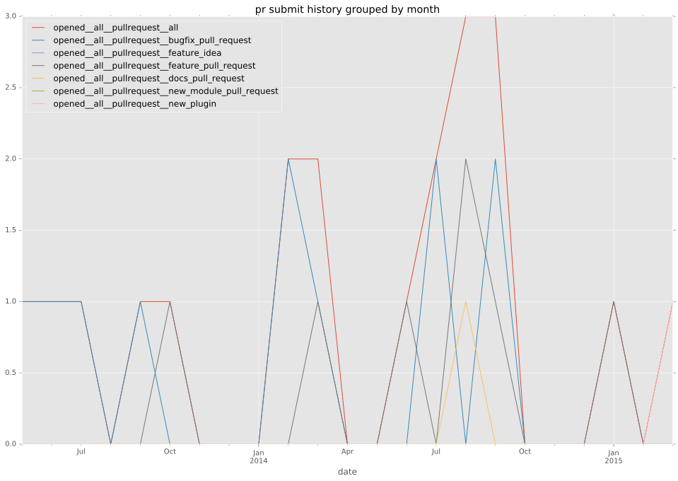
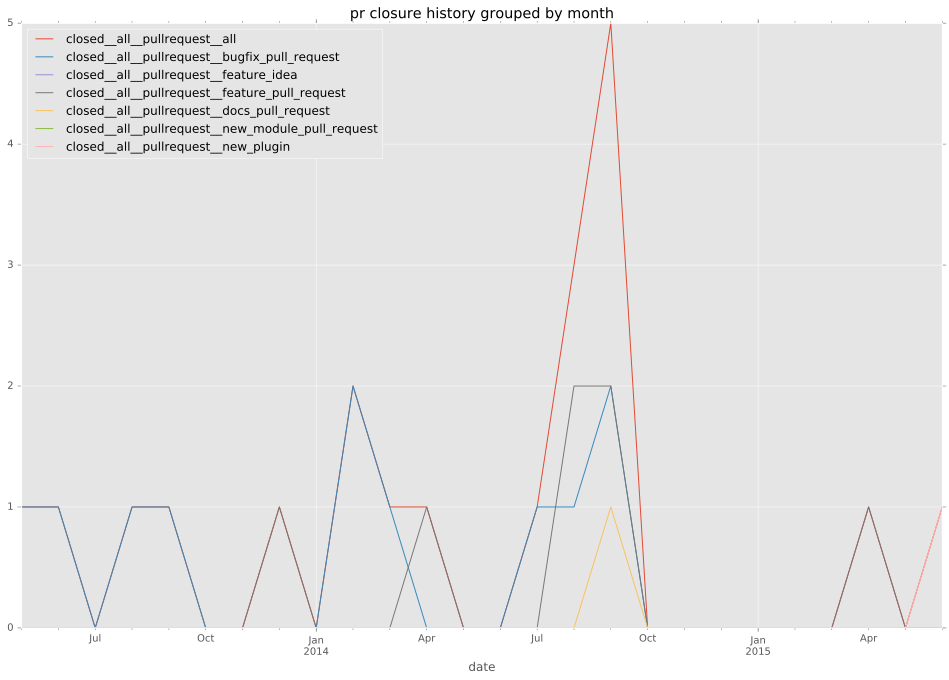

authors
maintainers
- emonty
- shrews
- juliakreger
- j2sol
- rcarrillocruz
contributors
- ericwb : 26 commits
- mpdehaan : 19 commits
- abadger : 8 commits
- Hypermanzer : 6 commits
- emonty : 4 commits
- jpmens : 3 commits
- yfried-redhat : 2 commits
- jctanner : 1 commits
- hhamalai : 1 commits
- echohead : 1 commits
total issue counts
bugfix pull request: 10
pullrequest: 21
docs pull request: 2
feature pull request: 8
issue: 7
new plugin: 1
bug report: 7
issue history
pullrequest history


days open by issue type
feature pull request
count: 10
std: 30.1514694685
min: 3
max: 85
median: 16.5
mean: 27.0
all
count: 37
std: 181.21235034
min: 0
max: 579
median: 5.0
mean: 90.972972973
pullrequest
count: 0
std: nan
min: nan
max: nan
median: nan
mean: nan
docs pull request
count: 4
std: 17.3205080757
min: 0
max: 30
median: 15.0
mean: 15.0
bugfix pull request
count: 14
std: 3.10971536806
min: 0
max: 9
median: 1.0
mean: 1.85714285714
issue
count: 0
std: nan
min: nan
max: nan
median: nan
mean: nan
new plugin
count: 2
std: 0.0
min: 65
max: 65
median: 65.0
mean: 65.0
bug report
count: 7
std: 215.085143717
min: 0
max: 579
median: 529.0
mean: 411.428571429
closures grouped by total days open